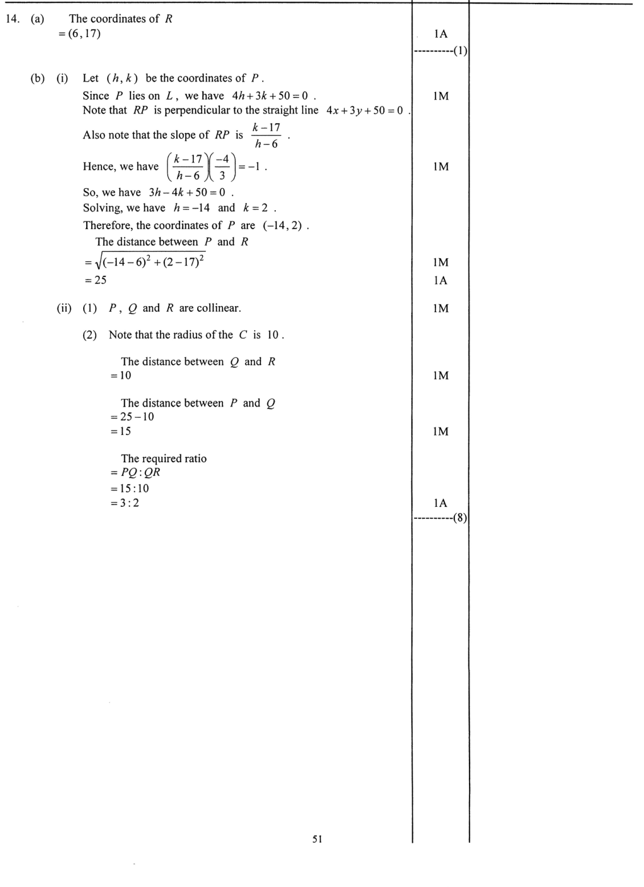

2013 DSE 數學 P1 Q14 答案＋詳解
題目（中文卷）
圓 $C$ 的方程為 $x^{2}+y^{2}-12x-34y+225=0$。將 $C$ 的圓心記為 $R$。
(a) 寫出 $R$ 的坐標。 (1 分)
(b) 直線 $L$ 的方程為 $4x+3y+50=0$。現知 $C$ 與 $L$ 沒有相交。設 $P$ 為 $L$ 上的一點使得 $P$ 最接近 $R$。
(i) 求 $P$ 與 $R$ 間的距離。
(ii) 設 $Q$ 為 $C$ 上的一動點。當 $Q$ 最接近 $P$ 時，
(1) 描述 $P$、$Q$ 與 $R$ 之間的幾何關係；
(2) 求 $\Delta OPQ$ 的面積與 $\Delta OQR$ 的面積之比，其中 $O$ 為原點。 (8 分) 乙部（35分）
English version（英文卷題目）
The equation of the circle ( C ) is ( x^2 + y^2 - 12x - 34y + 225 = 0 ). Denote the centre of ( C ) by ( R ).
(a) Write down the coordinates of ( R ). (1 mark)
(b) The equation of the straight line ( L ) is ( 4x + 3y + 50 = 0 ). It is found that ( C ) and ( L ) do not intersect. Let ( P ) be a point lying on ( L ) such that ( P ) is nearest to ( R ).
(i) Find the distance between ( P ) and ( R ).
(ii) Let ( Q ) be a moving point on ( C ). When ( Q ) is nearest to ( P ),
(1) describe the geometric relationship between ( P ), ( Q ) and ( R );
(2) find the ratio of the area of ( \triangle OPQ ) to the area of ( \triangle OQR ), where ( O ) is the origin. (8 marks)
官方評卷參考（Marking Scheme）

考評報告
甚佳。少數考生誤以為 R 的坐標為 (12,34) 。平平。很多考生忽略了 C 與 L 沒有相交,並嘗試求 C 與 L 的交點。甚差。大部分考生忽略了 $\Delta OPQ$ 與 $\Delta OQR$ 有相同的高。